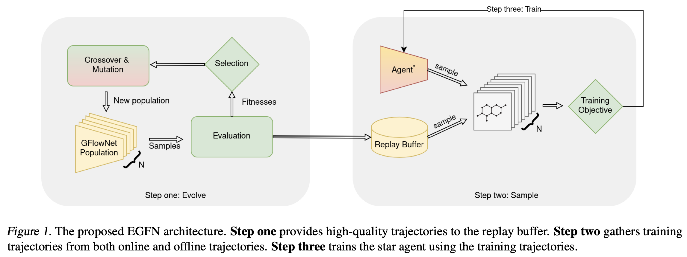
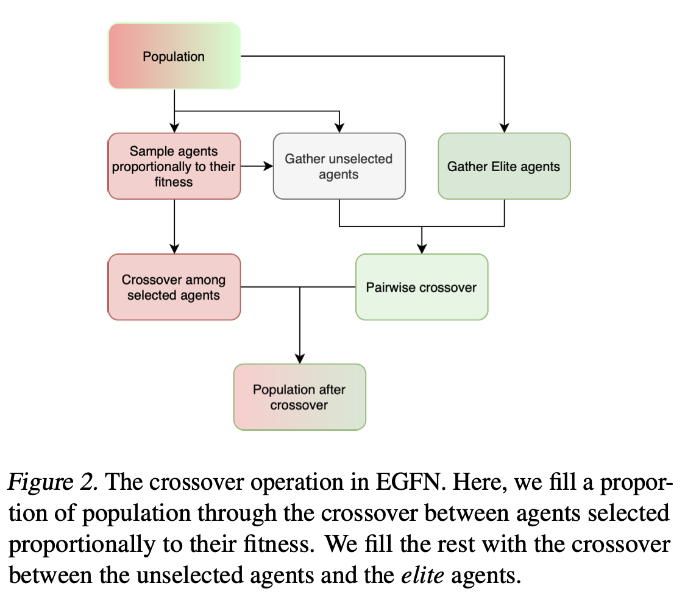
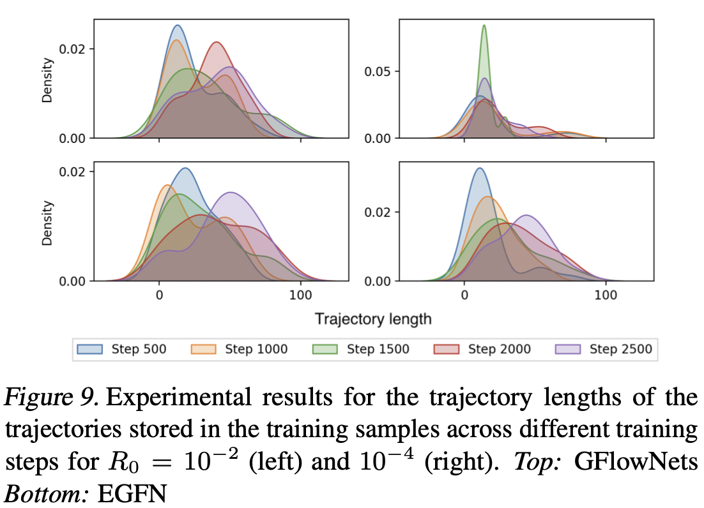
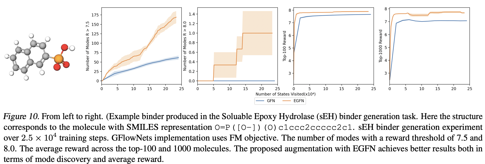

Generative Flow Networks (GFlowNets) are a family of probabilistic generative models that learn to sample compositional objects proportional to their rewards. One big challenge of GFlowNets is training them effectively when dealing with long time horizons and sparse rewards. To address this, we propose Evolution guided generative flow networks (EGFN), a simple but powerful augmentation to the GFlowNets training using Evolutionary algorithms (EA). Our method can work on top of any GFlowNets training objective, by training a set of agent parameters using EA, storing the resulting trajectories in the prioritized replay buffer, and training the GFlowNets agent using the stored trajectories. We present a thorough investigation over a wide range of toy and real-world benchmark tasks showing the effectiveness of our method in handling long trajectories and sparse rewards.
@inproceedings{
anonymous2024evolution,
title={Evolution Guided Generative Flow Networks},
author={Anonymous},
booktitle={ICLR 2024 Workshop on Generative and Experimental Perspectives for Biomolecular Design},
year={2024},
url={https://openreview.net/forum?id=9Re0rOaYAH}
}